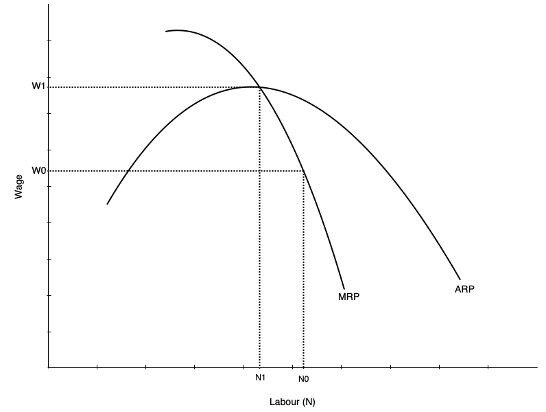
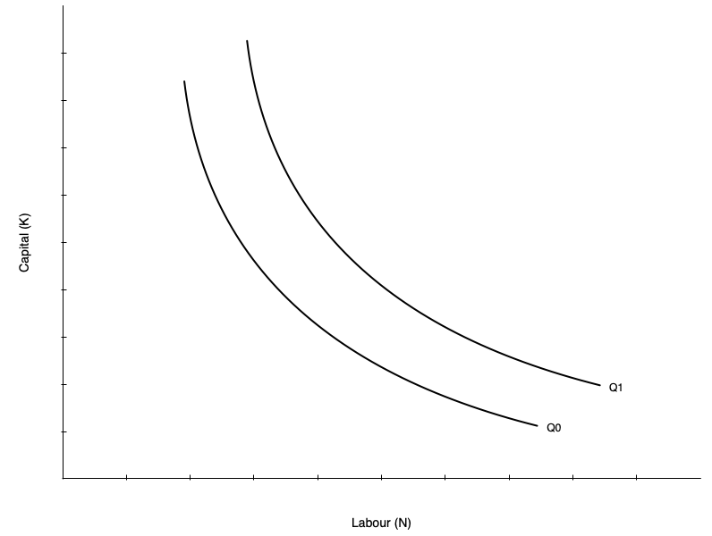
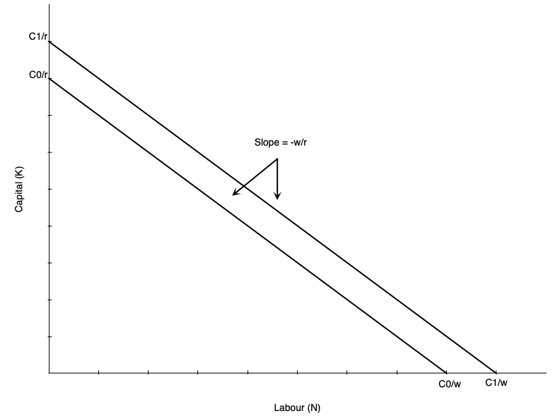
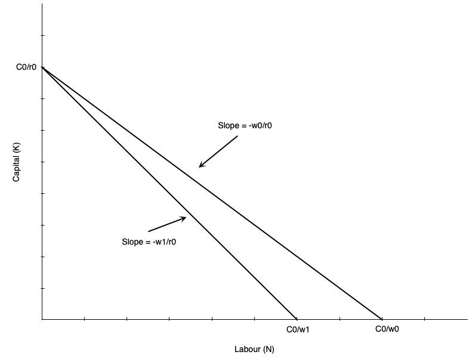
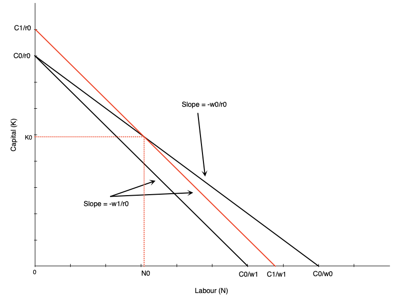
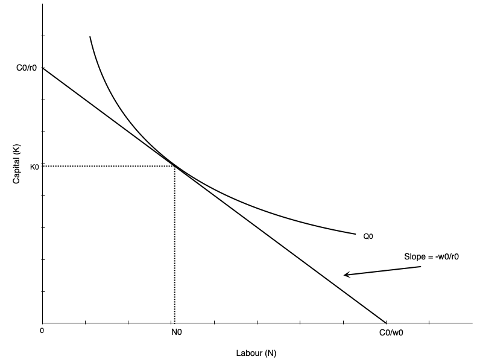
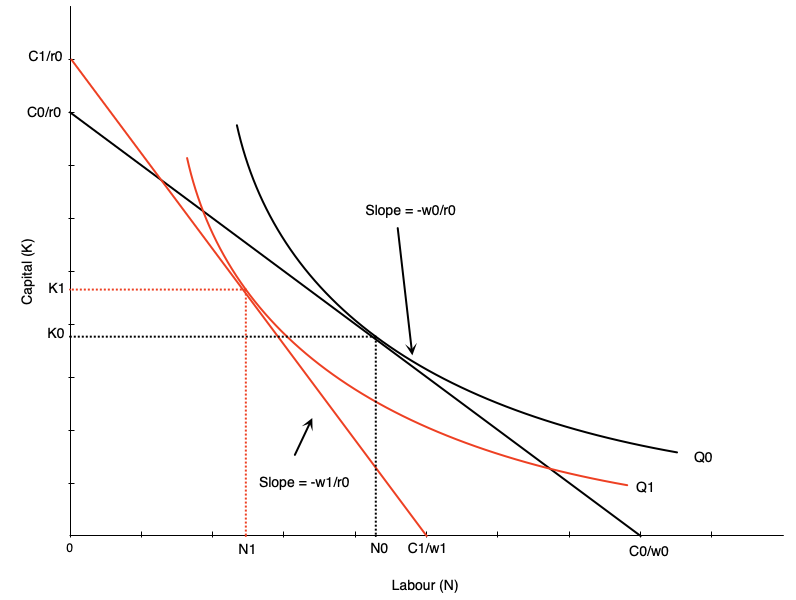
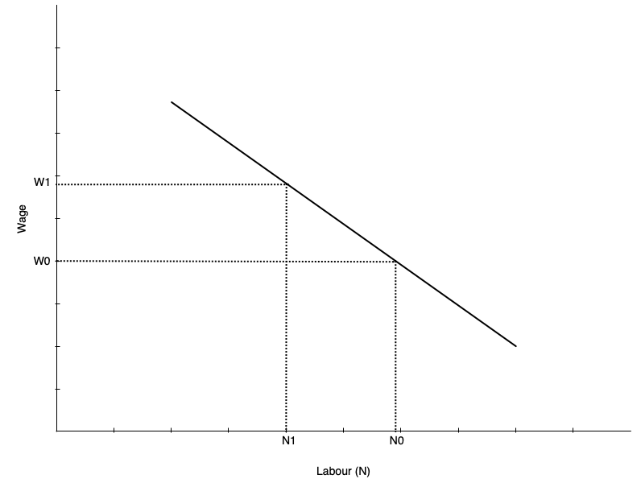
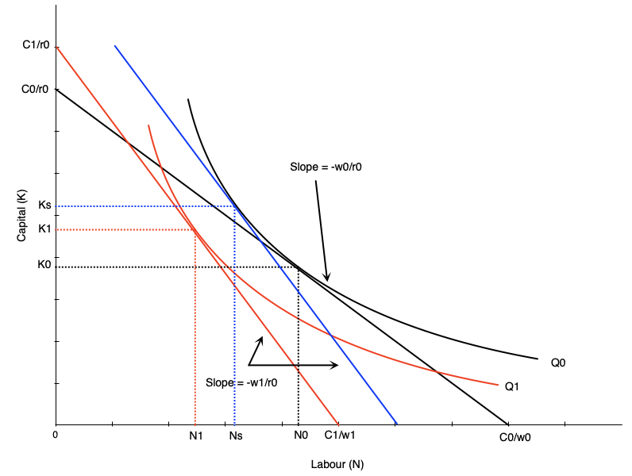

Labour Demand 1: Competitive Labour Markets
EC306- Wages and Employment
Justin Smith
Wilfrid Laurier University
Fall 2025

Goals of This Section
Goals of This Section
Understand how firms decide how much labour to employ to produce
Compare short-run vs. long-run labour demand decisions
Explain why labour demand is downward sloping
Learn factors that affect the elasticity of labour demand
Understand the impact of free trade and international competition on the Canadian labour market
Background
Background
Labour demand refers to the number of workers that firms want to hire at a given wage rate
It is a derived demand
- Linked to demand for the goods/services produced
- It is an input into that production
Several factors will influence labour demand
- Firm’s objectives and constraints
- Demand conditions in product markets
- State of technology
- Time horizon
- Short run: one or more inputs fixed (usually capital)
- Long run: all inputs variable
Structure of Product Markets
We noted that labour demand is driven by the firm’s output
- Labour is used as a input
The structure of the product market will influence the demand for labour
- Ranges from perfect competition (many sellers) to monopoly (one seller)
By contrast, the structure of the labour market will influence the supply the firm faces
- Ranges from perfect competition (many workers) to monopsony (one buyer)
In this section we examine the case of perfect competition in both product and labour markets
Demand in the Short Run
Model
As labour demand is derived from production, the model starts with a production function
- Relates inputs to outputs
\[ Q = f(K, N)\]
- Where
- \(Q\) is quantity of output
- \(K\) is capital (fixed in short run at \(K_{0}\))
- \(N\) is labour (variable in short run)
- Firms objective is to maximize profit
- In the short run this means choosing \(N\) given fixed \(K_0\)
- Optimality is where the marginal revenue product of labour equals its price
Model
To see this mathematically, take output prices are taken as given (perfect competition).
Profit \[\pi(N)= pQ - wN - rK_{0}\] \[= pF(K,N) - wN - rK_{0} \]
Differentiate \(\pi(N)\) w.r.t. \(N\):
\[\frac{d\pi}{dN} = p\frac{\partial F}{\partial N}(K_{0},N) - w\]
\[= p MP_N - w\]
Model
- Optimal \(N^\ast\) satisfies
\[pMP_N \;=\; w\]
Where
- \(MP_N\) is the marginal product of labour
- \(pMP_N\) is the marginal revenue product of labour (\(MRP\))
- When firm is in perfectly competitive product market and \(MR = p\) it is called value of marginal product (\(VMP\))
- \(w\) is the wage rate (marginal cost of labour, \(MC_N\))
Optimality requires that the value of the last unit of labour hired equals its cost
Model
Other key metrics include
- Total Revenue Product(\(TRP\)): Total revenue associated with labour employed \[TRP = p \times Q\]
- Average Revenue Product(\(ARP\)): Average revenue per unit of labour employed \[ARP = \frac{TRP}{N} = \frac{p \times Q}{N}\]
As noted, the firm’s optimal choice of labour is where \(MRP_N = w\)
- This defines its labour demand curve in the short run
- As \(w\) varies, the firm will adjust \(N\) to maintain equality
Labour Demand Curve in Short Run

The short run labour demand curve is the MRP curve below ARP
- Says the amount of labour demanded at every wage
Slopes down because of diminishing marginal product of labour
As more labour is employed, extra amount produced falls
Not because of inferior labour, but because more labour is using fixed capital
As wage falls, firm is willing to use more labour
Demand Curve and Competition in Product Market
The demand for labour depends on the demand for the product being produced
It therefore also depends on the structure of the product market
Firm will always maximize profit by choosing labour where \(MRP_N = w\)
But marginal revenue in perfectly competitive market and monopolistic market differ
- In perfect competition \(MR = p\), but in monopoly \(MR < p\)
- In perfect competition \(MR\) does not fall with more \(N\), but in monopoly \(MR\) falls as \(N\) increases
So with less competition in product market
- Labour demand is lower
- It falls faster with more \(N\) because \(MR\) falls as \(N\) increases
Demand in the Long Run
Introduction
The long run differs from the short run because all inputs are variable
- Firms can adjust capital as well as labour
This makes the decision more complicated
- We now have to consider subsitution between labour and capital
- We also have to consider economies of scale
Approach to find optimum occurs in two steps
- Minimize cost holding output constant
- Choose output to maximize profit given cost function
Cost Minimization
First step is to minimize cost of producing given output \(Q_0\)
This occurs when an isoquant is tangent to an isocost line
- Isoquant shows combinations of \(K\) and \(N\) that produce \(Q_0\)
- Isocost line shows combinations of \(K\) and \(N\) that cost the same amount
- Analogous to utility maximization with indifference curves and budget constraints
Assume the cost of capital is \(r\) and cost of labour is \(w\)
- Total cost is \(C = rK + wN\)
The prouction function is \(Q = F(K,N)\)
- We want to minimize \(C\) subject to \(Q = Q_0\)
Cost Minimization

Graph on left shows two isoquants
- Combinations of capital and labour that produce the same quantity
Shape of isoquant is given by the production function
- Shown as convex, but could be different shapes
- A linear isoquant would imply perfect substitutes
- An L-shaped isoquant would imply perfect complements
Slope of isoquant is the marginal rate of technical substitution (MRTS)
- MRTS is the rate at which you can substitute labour for capital holding output constant
Cost Minimization
- The slope of the isoquant is given by the MRTS
\[MRTS = \frac{MP_N}{MP_K}\]
Tells you amount of capital you can give up for one more unit of labour holding output constant
Isoquants are typically display diminishing MRTS
- When a lot of capital is used, you can give up a lot of capital for one more unit of labour
- When a lot of labour is used, you can give up only a little capital for one more unit of labour
Cost Minimization
The other part of cost minimization is the isocost line
- Gives combinations of \(K\) and \(N\) that cost the same amount
Total cost is given by \[C = rK + wN\]
Rearranging gives the isocost line equation:
\[K = \frac{C}{r} - \frac{w}{r}N\]
Slope of isocost line is given by the ratio of input prices
- As \(w\) increases, isocost line becomes steeper
- As \(r\) increases, isocost line becomes flatter
Cost Minimization

Graph shows an example isocost
- Slope is given by ratio of input prices \(-w/r\)
If a firm uses only labour, it is equal to \(C/w\)
If a firm uses only capital, it is equal to \(C/r\)
As labour falls by one unit, capital must rise by \(w/r\) units to keep cost constant
Higher cost line shifts isocost line outward (e.g. when \(C\) increases to \(C'\))
Cost Minimization

Suppose the wage rises from \(w_0\) to \(w_1\)
Imagine first that we hold cost constant at \(C_0\)
Isocost line would pivot inward
- Steeper slope as \(w/r\) increases
- If firm uses only capital, vertical intercept remains the same at \(C_0/r\)
- If firm uses only labour, horizontal intercept falls to \(C_0/w_1\)
All combinations of new isocost line lie below old isocost line
Cost Minimization

To use any of the old combinations of \(K\) and \(N\), the firm must increase cost
- Shifts isocost outward to \(C_1\)
- Magnitude of shift depends on which combination is chosen
One example depicted to the left
To use combination \((N_{0}, K_{0})\) at new prices the cost curve shifts out
Cost Minimization
The cost minimizing bundle is where the isoquant is tangent to the isocost line
In mathematical terms this means
\[\frac{MP_N}{MP_K} = \frac{w}{r}\]
Says that MRTS is equal to the ratio of input prices
Alternatively, says that
\[\frac{MP_N}{w} = \frac{MP_K}{r}\]
- The last dollar spent on each input must yield the same marginal product
Cost Minimization

Cost minimization depicted to the left
If we hold output constant at \(Q_0\), find the optimal combination of \(K\) and \(N\)
Happens at the tangency point between isoquant and isocost line
Cost Minimization
Note that we have only done cost minimization here
- Lowest cost given output level \(Q_0\)
Profit maximization involves choosing output level as well
- Choose \(Q\) to maximize profit given cost function
The second step of choosing output is not depicted here
If the wage rate goes up, the firm will re-optimize
- Firm marginal and average cost curves shift up
- Each firm reduces output
- Market price rises
The isoquants at the profit max will shift inward
Deriving Labour Demand in Long Run
Deriving Labour Demand
The labour demand curve plots combinations of \(w\) and \(N\) such that the firm is maximizing profit
To derive it, we consider changing wage from \(w_0\) to \(w_1\)
- Isocosts get steeper as \(w/r\) increases
- Firm finds cost minimizing combination of \(K\) and \(N\) at new wage for each level of output
- Because cost increases, firm reduces output (optimal isoquant is to the left of original one)
At new optimum we have
- Lower quantity of labour demanded
- Higher wage
Deriving Labour Demand

Effect of wage increase on labour depicted to the left
Wage goes up, which steepens isocost line
Firm scales down production to lower isoquant
The tangency between new isoquant and new isocost line shows new optimal labour and capital
This involves less labour employed
Effect on capital depends on substitutability between labour and capital
- The shape of the isoquant
Deriving Labour Demand

Deriving Labour Demand
The labour demand curve summarizes the optimal choices of labour at different wage rates
Graph in previous slide shows to two points on the labour demand curve
- \((w_0, N_0)\) and \((w_1, N_1)\)
To derive the full demand curve you can vary the wage rate to other levels
Recall that the demand curve shows the amount of labour demanded at every wage all else equal
- Other determinants of demand will shift the curve
Scale and Substitution Effects
When the wage changes, two effects occur that influence labour demand
- Substitution effect: change in input mix due to change in relative input prices
- Scale effect: change in output due to change in cost of production
The substitution effect makes firms want to substitute capital in place of labour
- Leads to less labour demanded when wage rises
- More capital demanded
The scale effect comes from reduction in output, and leads to less labour demanded when wage rises
- As production becomes more expensive, firms produce less
- Use less labour and capital
For labour demand, scale and substitution effect work in the same direction
- But opposite directions for capital
Scale and Substitution Effects

To find substitution effect, find cost minimizing bundle at new wage and old output
- Blue line in the graph
- Scale effect is \(N_{0} \rightarrow N_{s}\)
Scale effect is the change from optimum at new wage and old output to new wage and new output
- Shift from blue to red line in graph
- Scale effect is \(N_{s} \rightarrow N_{1}\)